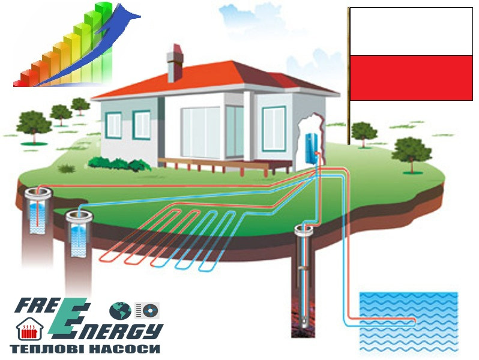

F.A.Q. по тепловым насосам

Да! Тепловой насос просто транспортирует тепло из одного места в другое. Ваш холодильник работает по такому же принципу. Если Вы поставите бутылку с водой в холодильник, через некоторое время, она охладится. Притронувшись к задней стенке холодильника, и Вы почувствуете тепло, которое холодильник забрал у бутылки. Используя этот же принцип, тепловой насос перемещает тепло из земли в Ваш дом, а Солнце снова восстанавливает это тепло. Земля имеет свойство впитывать солнечное тепло. Это тепло извлекается из коллектора, уложенного на Вашем участке. Вода с незамерзающей жидкостью циркулирует в коллекторе, абсорбируя тепло из окружающего его грунта. Коллектор в доме подсоединен к тепловому насосу, который передает тепло в систему отопления и нагревает бытовую воду. Нет, при нуле замерзает вода. Тепловая энергия есть во всем, температура чего выше -273 °C. Геотермальный тепловой насос будет работать вплоть до -10 °C в коллекторе. В Украине укладка горизонтального коллектора на глубину около метра есть оптимальной. Доступная площадь возле здания определяет метод поглощения тепла. Коллектор может быть уложен в грунт или погружен в скважину. Также он может быть уложен на дно водоёма. Если места для горизонтальной укладки недостаточно и бурить очень дорого, можно установить воздушный тепловой насос. Его эффективность ниже, но установить его можно где угодно. Тепловой насос функционирует от электросети, используя затраченную энергию гораздо эффективнее любых котлов, сжигающих топливо. Значение КПД у него в несколько раз больше единицы. Например, расходуя 1 кВт электроэнергии, Вы получите 3-4 кВт тепла. Таким образом, получаете 2-3 кВт тепла бесплатно из окружающей среды. Можно размещать в подсобном помещении, кладовке, подвале, или даже в гараже. Тепловой насос шумит как обычный бытовой холодильник. Можно использовать как радиаторную систему, так и напольное отопление. Наиболее эффективным сочетанием является тепловой насос с напольным отоплением. В таком случае КПД будет максимально возможным. В коммерческих зданиях тепловой насос лучше подключить к системе воздушного распределения. Да. Тысячи этих систем были установлены в разных точках Европы, в том числе и в Скандинавии, где зимы очень суровые. Мы спланируем наиболее подходящую систему для Вас. Мы сделаем правильный подбор исходя из пикового количества потребляемой горячей воды в самый холодный день в году. Тепловые насосы производят не такую горячую воду как газовые котлы. Вместо производства горячей воды, которой можно обжечься, Вам нужно будет добавлять меньше холодной воды, чем Вы привыкли. Цель в том, чтобы не вырабатывать слишком горячую воду и таким образом экономить Ваши деньги. Ведь выработка неадекватно горячей воды приводит к уменьшению эффекта теплового насоса. Да. Можно приобрести тепловой насос с блоком охлаждения, что абсолютно уберет потребность в кондиционировании и горячей воде в летний период. Технически это реализуется с помощью фанкойлов или приточной вентиляции. Да. Мы можем разработать установку с подогревом бассейна. Да, сравнивая с любой топливной системой, тепловой насос в несколько раз экономичнее в эксплуатации. Насос не производит вредных выбросов, воздейстие коллектора минимально, хладагент R407C, циркулирующий в агрегате, нетоксичен и безвреден для озонового слоя. Солнце – мощнейший источник энергии, оно нагревает воздух, воду, земную поверхность и глубины. Тепловой насос извлекает эту накопленную солнечную энергию. Системный мониторинг реализуется микропроцессорными средствами автоматики, автоматизированная система управления обеспечивает безопасный и эффективный режим работы теплового насоса и дополнительного оборудования. Подробное описание функций можно найти в инструкциях пользователей. Срок эксплуатации земляного коллектора зависит от уровня кислотности почвы и может достигать 50-100 лет, при повышенном же "pH" - приблизительно 30 лет. Непосредственно в самой установке единственной движущей частью является компрессор, срок службы которого составляет 15 лет, и который можно легко и дешево заменить по истечении срока его эксплуатации. В процессе эксплуатации система не нуждается в специальном обслуживании, возможные манипуляции не требуют специальных навыков и описаны в инструкциях к конкретным моделям. Тепловой насос компактен - серийные установки имеют размер 600x600x1650 и 600x600x850 мм. По желанию заказчика корпус может быть выполнен в дереве. Тепловой насос совместим с практически любой циркуляционной теплопроводной отопительной системой, независимо от вида котла.